4.1 Guest access, hint, debounce — ✅ Passed
- No redirect; „Zaloguj się” link; no scope radios
- 1 char → hint, 0 requests
- „kar” → exactly 1 debounced request, scope=all, 68 results
Contents: Environment · Scenarios · Discrepancies · Console · Spec alignment · Exit criteria · Conclusion
| Base URL | http://localhost:5173 (Next dev, /api → :8080, DB 0096) |
|---|---|
| Browser | Playwright MCP Chromium |
| Viewport | 430×900 |
| Auth | guest; freshly registered test user (later founder of a test org) |
| Data | live dev DB + UI-created records |
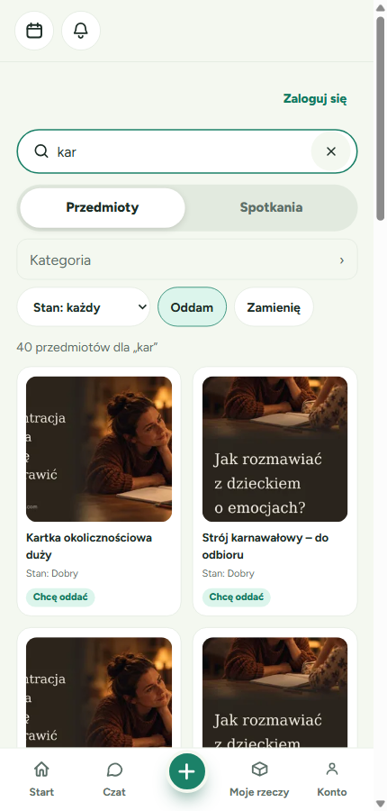
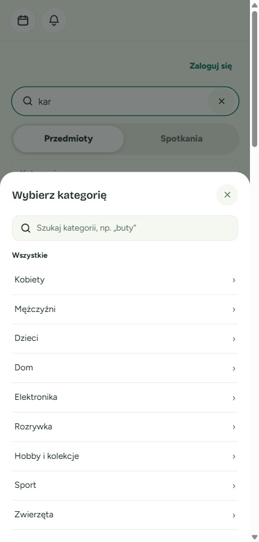
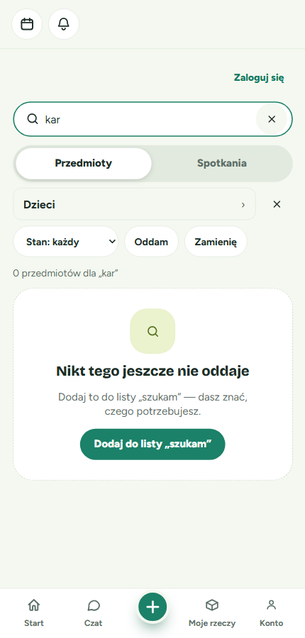
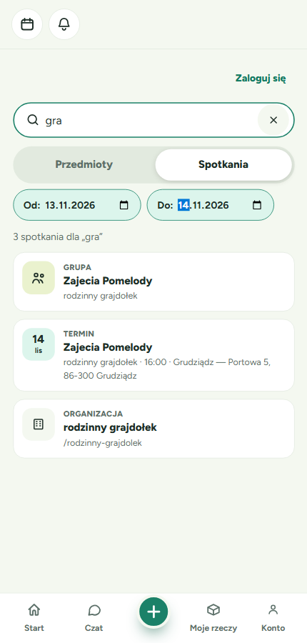
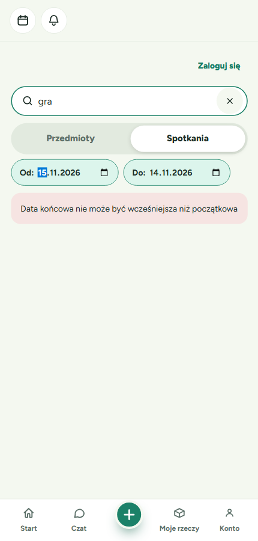
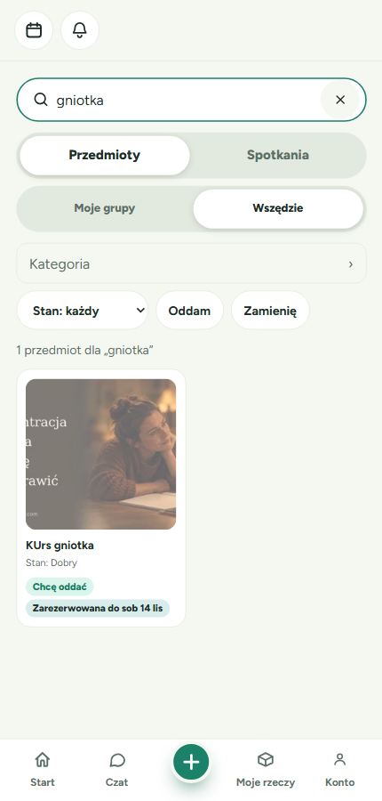
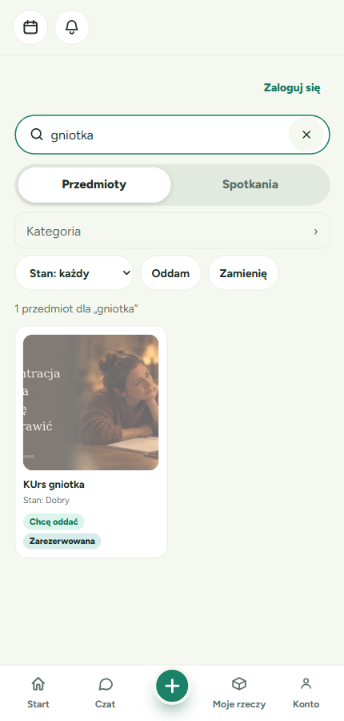
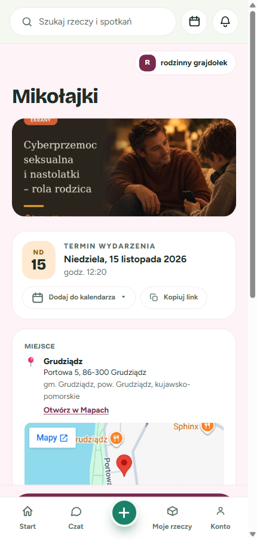
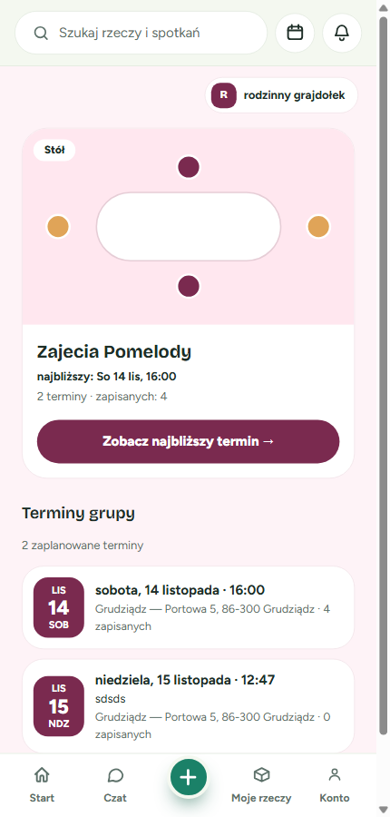
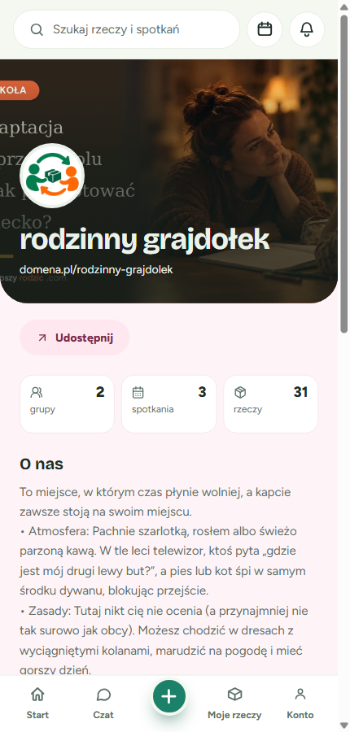
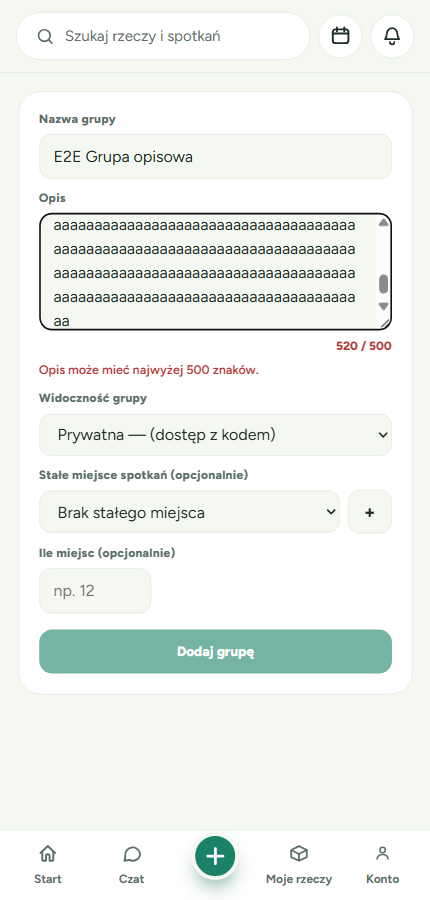

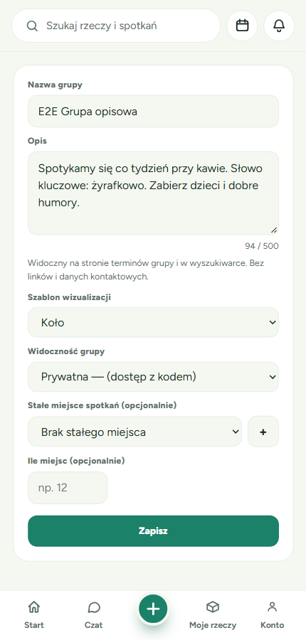
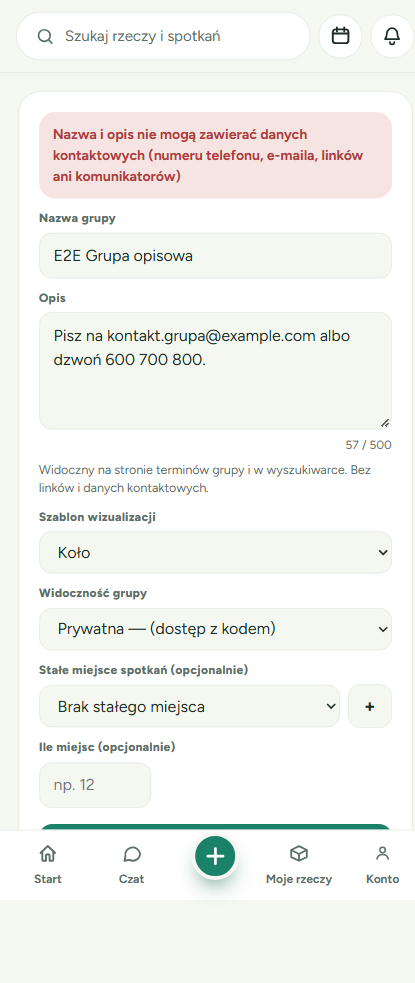


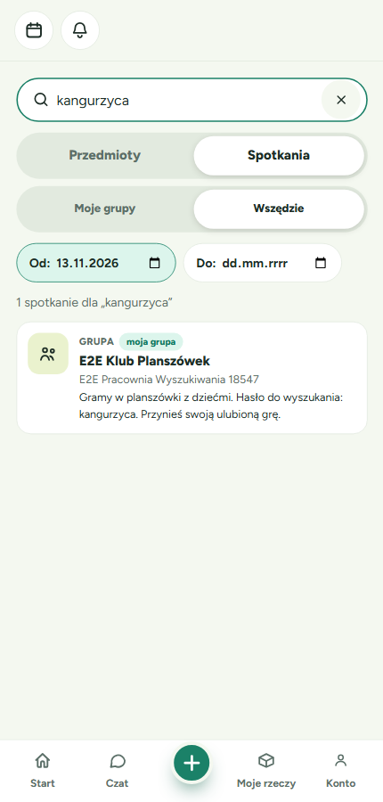
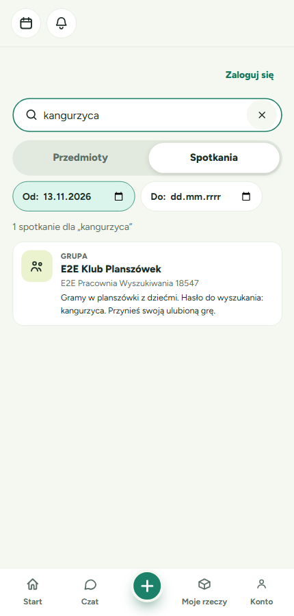
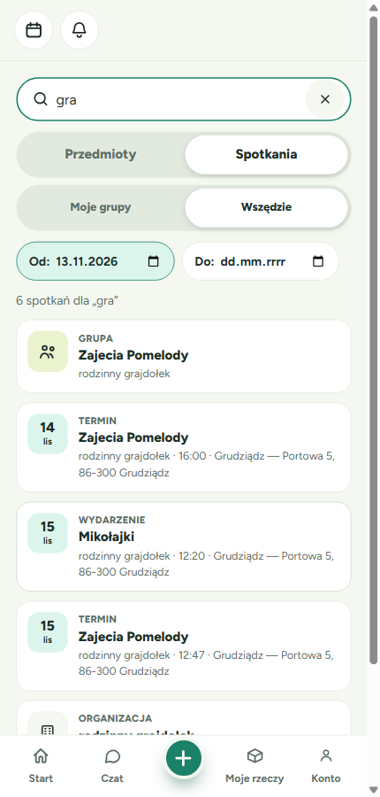
| Severity | Finding | Notes | Evidence |
|---|---|---|---|
| Critical | None observed. | ||
| Major | None observed. | ||
| Minor | M1 — Same-tick filter changes lose the first filter | Setters merge into a stale searchParams snapshot; at ≥100 ms both are kept. Fix: build from current location. | 04-guest-items-filtered.png |
| Minor | M2 — Inverted date range sent to the server | 400 + console error; server message shown. Fix: client-side range check / min-max. | 09-guest-meetings-inverted-dates.png |
| Cosmetic | C1 — Kategoria trigger accessible name „Kategoria Kategoria” | aria-labelledby references label + placeholder value. | 01-guest-search-initial.png |
| Cosmetic | C2 — Guest „Zaloguj się” in its own row, not the header | Panel chrome has no header slot. | 03-guest-items-results.png |
| Cosmetic | C3 — Guest URL keeps scope=mine | Results correct (server forces all); URL not normalised. | — |
| Source | Message | Frequency | Severity |
|---|---|---|---|
GET /api/public/search?…date_from>date_to | 400 | once (M2) | Minor |
GET /api/organizations/mine | 404 | every panel load, user without an org | Cosmetic, pre-existing |
No JS exceptions or React warnings.
Fully implemented: public /search + guest branch, hint and debounce, infinite paging, mode tablist and scope radiogroup, per-mode filters cleared on switch, guest Kategoria, other-mode line, empty cards + szukam prefill, 5 card kinds, reserved label, „moja grupa” pill, description form/edit/banner, terms header, description search + clamp, R9 omission, date-narrowed groups, URL state and back.
Partially: guest scope URL normalisation (C3); client date-range validation (M2).
Accepted deviations: Kategoria full-width trigger, Stan select, native Od/Do, guests see date filters, „Chcę oddać / Chcę się zamienić” pills.
Variances: Moje grupy item matches and the Q4 ordering were not set up in the UI (backend tests cover them); test records were left in the dev DB.
| Criterion | Status |
|---|---|
| /search works for guests and logged-in users and matches the 7 binding mockups | ✅ |
| Group description editable (≤500), displayed on the two surfaces only | ✅ |
| Guest sees only public content; scope=mine forced to all | ✅ |
| Guest loads the category tree; category filter works | ✅ |
| Person-run group without an upcoming term omitted | ✅ |
| other_mode_count equals the total after switching | ✅ |
⚠️ GO WITH CAVEATS — merge, and fix M1/M2 in a follow-up. Must fix before merge: none. Should fix soon: M2, M1. Nice-to-have: C1–C3.